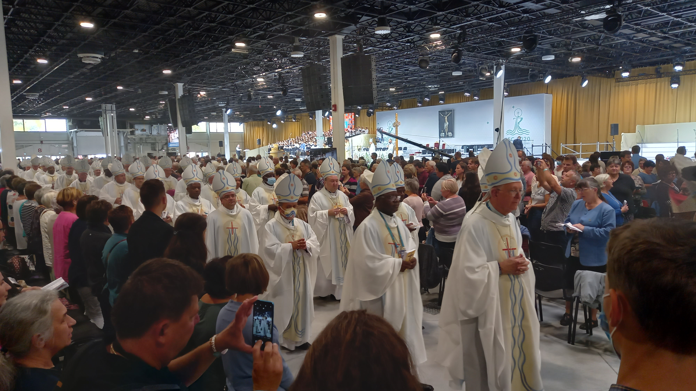

BOLG
„Bolgok, akik programoznak, mert teremtenek valamit,
ami egyszercsak életre kel és működik.”
Mt 5,1-10
← előző: Szemerédi prof és a Ramsey-tétel |
következő: magyar választási rendszer, kétharmad, 2018 →
„Most van a NEK, most kell ezt csinálni!” – 2021. október 24.
Először kicsit idegennek tűnik az egész, aztán eltelik sok idő, majd szinte az utolsó pillanatban jön egy jel, sőt még egy, és elkezdesz óvatosan lelkesedni, beleásod magad, aztán nagyon lelkesedsz, és végül minden várakozásodat felülmúlja a dolog. Valahogy így voltam én a NEK-kel.
Kezdetben volt ez a (bocs!) nem szép kék-sárga-piros-zöld logó meg ez a kicsit nehezen befogadható ima: addig rendben, hogy „Urunk és Mesterünk”, ez még az utca emberének is érthető, a „barátunk és táplálékunk” már jóval nehezebb, de mi az, hogy valaki a „békességünk”... És emlékeztek 2019. május 2-ra? A boldog COVID előtti időkben 500 gyerek gyűlt össze a Szent István-bazilika előtt, hogy hirdesse, hogy 500 nap múlva kezdődik a NEK. „A szeretet összeköt, a szeretet éltet” énekelték (énekeltétek!). Ez a dal sokakban kiverte a biztosítékot, de nekem bejött. Közben – mivel a NEK lényege mégiscsak az Oltáriszentség lenne – szerveződtek a mindenféle szentségimádások: Krisztus királykor az egész világról ezrek kapcsolódtak be, voltam Zsámbékon Taizéi énekes alkalmon és felfedeztem a Bazilika fantasztikus hangulatú oldalkápolnáját, mindenkinek ajánlom, hogy térjen be ide. Korábban én sose jártam szentségimádásra, de most mintha megéreztem volna az ízét.
Aztán a COVID hullámait átvészelve idén tavasszal kezdett érződni, hogy szeptemberben itt tényleg lesz valami. Augusztus végén aztán berobbantak a dolgok. Elkísértem Lencsi lányomat átvenni az önkéntes csomagját, egy barátom mondta, hogy ők természetesen (!) egész hétre kikérik a gyerekeket a suliból és minden nap ott lesznek a Hungexpón is, nem csak a miséken, feleségem anyukája pedig megjelent az „Ő és én” sorozatban, a youtube-on. Ekkor néztem bele először rendesen a programba: misék, körmenet, missziós színpad a Széll Kálmán téren és ekkor már a Hungexpóra is regisztráltam, a keddi napra egy nap szabadságot betervezve.
A PaSában már nagy erőkkel folytak a kóruspróbák, a szürcsilé és a 383-as ásványvíz. A nyitómise az első fantasztikus élményem volt: emelkedett és bensőséges (Veni sancte), kiváló zenei szolgálattal, életvidám főcelebránssal, Bagnasco bíborossal („Mint egy szabadban rendezett lakomán, úgy gyűltünk most össze.”), a végén meg piknik, ahol ismerősök tömkelegével lehetett találkozni. A szervezés pedig hibátlan.
A Széll Kálmán térre – 200 méter otthonról – többször kimentem. Lackfi János szerint szerencse, hogy Jézus a sűrűn teleírt határidőnaplója ellenére nem panaszkodott, hogy „meghalni sincs időm”. Csiszér László előadásában az „Annak ki a trónon ül” különleges élmény volt, az Eucharist is szuper, és igen valóban „beeukarisztizálódtunk” ez alatt az egy hét alatt, ahogy a Gável András a színpadon mondta.

Kedden Hungexpó. Nagy kedvencem Lacroix Quebec-i érsek, aki katekézisében konkrétan eljátszotta, hogy hogy viselkedik és milyen pofákat vág némely ember a kézfogás szertartásánál, ami sokaknak „quite a challenge”. A békéről beszélt, de mindig így mondta: „peace and reconciliation”, talán mert valóban nincs is béke kiengesztelődés nélkül. A mise elején végeláthatatlan sorban özönlöttek a püspökök (!), a mise végén meg a valahonnan random beordított „Allelúja” után az egész óriási pavilonban kitört a taps. És ismerősök mindenhol. Örökre megmarad bennem, ahogy az egyik pavilon végében kb. 30 atya gyóntatott egyszerre és én lehettem az egyik gyónó. A nap vége felé pedig Jean-Luc Moens-től hallottam: imádságnak az nem az igazi, hogy „Jöjj, Szentlélek, de arra a hülyére ott a másik sorban, arra ne.”
Hodász András atyával több alkalommal is lehetett találkozni. „A vélemény szabad, de a tisztelet kötelező!” – mondta, és ez egy gyakorló vloggertől, mint a közösségi média alapelvének szánt gondolat, nekem kifejezetten tetszik.
Szombaton aztán a Kossuth téri mise kiváló katonazenekarral, jelnyelvi tolmácsolással, PaSás apuka lektorral, fantasztikus hangulatú körmenettel.
És végül a grandiózus pápai mise. „Chi sono io per te?” azaz „Ki vagyok én nektek?” Ki nekem Jézus? Valaki, akit a saját szám íze szerint elképzelek magamnak vagy oda tudok figyelni az igazi Jézusra? Érdemes elolvasni, ízlelgetni Ferenc pápa teljes prédikációját, neten megvan. „Isten eltesen!” üzente nekünk Ferenc pápa, mi meg Erdő Péter szavaival válaszolhatunk: „Grazie, Santo Padre!”
A címben idézett mondat Lencsi lányomtól (b2) származik, mikor – miután a körmenet után éjfél körül ért haza az önkétes szolgálatából, és tudtam, hogy fél ötkor kel a vasárnapi szolgálatra – halkan jeleztem neki, hogy esetleg nem ártana egy kicsit aludni is. De igaza van: most volt a NEK, most kellett ezt csinálni. :)
készült a „PaSa sajtó”, a Pannonia Sacra Kat. Ált. Isk. diákújságja felkérésére: 2021. szeptember 27. – online: 2021. október 24. – a fotókat én készítettem